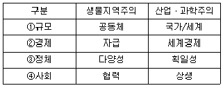
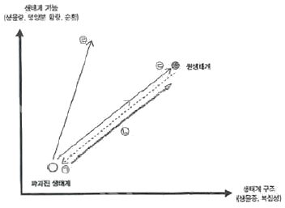
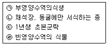
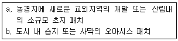
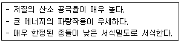
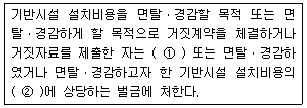
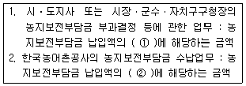
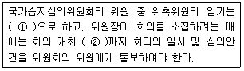
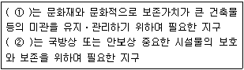

자연생태복원기사(구) (2011-08-21 기출문제)
1과목: 환경생태학개론
1. 생물상이 다양하며 담수생물과 육상생물의 서식처로서 양면성을 가지는 생태계는?
- 연안
- 습지
- 육수
- 정수
(정답률: 85%)

2. 생태계를 구성하는 구성요소별로 각각 짝을 지었다. 구성 요소별로 짝지어진 문항이 아닌 것은?
- 이산화탄소, 인산, 물, 마그네슘
- 잡초, 물속조류, 갈대, 옥수수
- 저서동물, 어류, 포유류, 파충류
- 탄수화물, 지방, 단백질, 비타민
(정답률: 65%)
3. 다음 중 비점오염원에 해당되는 것은?
- 생활하수
- 공장폐수
- 축산폐수
- 농경작지
(정답률: 69%)
4. 다음 중 개체군의 공간분포에 관한 설명으로 틀린 것은?
- 자연에서 흔히 있는 분포형은 집중분포이다.
- 규칙분포는 바둑판처럼 심은 과수원의 분포에서 볼 수 있다.
- 개체군의 집중분포는 습도, 먹이, 그늘과 같은 환경요인 때문이다.
- 새의 세력권제는 새를 불규칙적으로 분포하게 한다.
(정답률: 80%)
5. 에너지 전환효율에 관한 설명으로 틀린 것은?
- 에너지 흐름의 양상을 예측할 수 있는 전이효율은 소비, 동화, 생산효율로 구분된다.
- 동화효율은 초식동물이 육식동물보다 높다.
- 이차소비자의 소비효율은 육식동물에 의해 먹힌 초식동물 생산력의 백분율이다.
- 원생동물을 포함하는 미생물들은 아주 높은 생산효율을 갖는다.
(정답률: 62%)
6. 어류의 생태에 있어서 분포를 지배하는 요인으로 볼 수 없는 것은?
- 식이(food)
- 심도(depth)
- 수온(water temperature)
- 생태적 분포(ecological distribution)
(정답률: 87%)
7. 생태계에서 무기물과 에너지의 흐름에 관한 설명으로 옳은 것은?
- 무기물과 에너지는 모두 순환한다.
- 무기물과 에너지는 모두 소모된다.
- 무기물은 순환하지만 에너지는 소모된다.
- 에너지는 순환하지만 무기물은 소모된다.
(정답률: 81%)
8. 부영양화로 인한 수계의 영향으로 볼 수 없는 것은?
- 종다양성의 증가와 조류(藻類)번식 감소
- 탁도의 감소와 퇴적비율의 감소
- 생물량의 증가와 어종의 변화
- 이끼류의 감소와 독성 감소
(정답률: 56%)
9. 다음 중 생존곡선(Pearl)을 바르게 설면한 것은?
- 어류개체군에서는 사선형 생존곡선을 나타낸다.
- 조류(새)는 주로 오목형의 생존곡선을 나타낸다.
- 문명국의 인구는 거의 볼록형에 가까운 생존곡선을 나타낸다.
- 해산의 무척추동물은 주로 계단형의 생존곡선을 나타낸다.
(정답률: 84%)
10. 조간대 지역은 조석의 주기에 따라 대기에 노출되고, 환경변화에 따라 서식 생물의 종류가 다르게 나타나게 된다. 암반지역에서는 이러한 현상이 상대적으로 뚜렷하게 나타나는데, 해수면에 수평 높이에 따라 달라지는 조간대 생물의 분포를 나타내는 용어는?
- 대상분포
- 임계분포
- 평형분포
- 규칙분포
(정답률: 78%)
11. 지표종(indicator species)에 관한 설명 중 틀린 것은?
- 내성 범위가 넓은 종은 좁은 종에 비하여 확실한 지표가 된다.
- 다수종에 비하여 희소종일수록 지표종이 되는 수가 많다.
- 극히 악화된 환경에서 생존한 종은 그 환경조건의 좋은 지표종이 된다.
- 환경정책기본법상 실지렁이는 생물등급 중 약간 나쁨~매우 나쁨의 등급수에 주로 서식하므로 수생태계의 지표종으로 볼 수 있다.
(정답률: 74%)
12. 대기오염물질의 중요한 제한 요인 중 육상생태계의 교란을 일으키는 원인이 아닌 것은?
- 빛의 조사량과 광도
- 생물들의 내성의 한계
- 온도상승에 따른 기후변화
- 강우량의 변동
(정답률: 59%)
13. 멸종위기에 처한 야생동식물을 보호하기 위한 국제협약은?
- CITES 협약
- Ramsar 협약
- 생물종다양성 협약
- CISG 협약
(정답률: 91%)
14. 군집의 명명(命名), 분류 특성으로 적합하지 않은 것은?
- 우점종, 생활형, 지표종 구조상의 주요한 특징
- 군집의 대사형과 같은 기능적 특성
- 군집의 생태형적 생활사
- 군집의 물리적 서식처의 특징
(정답률: 48%)
15. 보전지역 설정을 위한 유네스코의 MAB 모델과 거리가 먼 것은?
- 핵심지역(core)은 희귀종, 고유종, 멸종위기종이 많거나 생물다양성이 높은 곳이다.
- 완충지역(buffer)은 핵심지역 이외의 보전이 필요한 지역이나 핵심지역의 보호를 위해 필요한 지역이다.
- 생태계를 관리하기 위한 연구소 및 실험시설, 생태관광등의 휴양활동, 거주 등은 완충지역에서 허용된다.
- 완충지역은 외부로부터의 부정적인 영향이 직접적으로 핵심지역에 미치는 것을 방지하며, 보전지역 설정에서 매우 중요하다.
(정답률: 74%)
16. 열대지방 해안의 맹그로브 숲에 대한 설명으로 적합하지 않는 것은?
- 조간대의 갯벌해안에 잘 발달된다.
- 뿌리로부터 들어오는 염을 제한하지 못한다.
- 관엽상록교목 혹은 관목인 염생식물이다.
- 산소와 이산화탄소를 교환하는 기근이 발달한다.
(정답률: 85%)
17. 생태계에서 동ㆍ식물의 분포와 풍부도를 규제하거나 제한하는 생태적 조건을 제한요인(limiting factor)이라 한다. 이와 같은 제한요인의 개념은 1840년 독일의 생화학자에 의해 농작물 생산량과 비료와의 관계에서 성립하는 원리로 주장되었다. 위에 해당하는 법칙은 무엇인가?
- 최종수량 일정의 법칙
- Shelford의 내성의 법칙
- Gause의 경쟁배타의 원리
- Liebig의 최소량의 법칙
(정답률: 81%)
18. 다음 생태계 중 단위면적 당 총 1차생산량이 가장 많은 곳은?
- 연안(沿岸)
- 농지
- 삼림
- 사막
(정답률: 48%)
19. 토양생태계의 설명으로 옳지 않은 것은?
- 모래는 점토보다 영양분 보유 능력이 우수하다.
- 토양에는 유기물을 분해하는 세균과 진균이 존재한다.
- 식물의 생육이 적당한 토양은 표토이다.
- 과도한 경작은 표토의 침식을 수반하곤 한다.
(정답률: 92%)
20. 다음 중 화분 매개충이 아닌 것은?
- 나비
- 매미
- 꿀벌
- 꽃등에
(정답률: 90%)
2과목: 환경계획학
21. 국토의 계획 및 이용에 관한 법률에 의거하여, 국토해양부장관은 국토의 이용 및 관리에 관한 계획의 원활한 수립 및 집행, 합리적 토지이용 등을 위하여 토지의 투기적인 거래가 성행하거나, 지가가 급격히 상승하는 지역과 그러한 우려가 있는 지역으로서 대통령령이 정하는 지역에 대하여, 몇 년 이내의 기간을 정하여 토지거래계약에 관한 허가구역을 지정할 수 있는가?
- 3년
- 5년
- 7년
- 10년
(정답률: 62%)
22. 환경친화적인 하천정비계획의 기본방향이라고 볼 수 없는 것은?
- 하천의 제반기능이 조화된 체계적인 하천관리
- 수환경 및 하천공간과의 일체화된 정비
- 친수성회복과 지역사회에 부응하는 하천정비
- 하천생태계의 환경미화적 활용도를 제고하기 위한 정비
(정답률: 60%)
23. 우리나라 국토공간계획의 체계와 순서로 옳은 것은?
- 국토종합계획 → 도종합계획 → 도시관리계획 → 도시기본계획 → 지구단위계획
- 국토종합계획 → 도종합계획 → 지구단위계획 → 도시관리계획 → 도시기본계획
- 국토종합계획 → 도종합계획 → 도시기본계획 → 도시관리계획 → 지구단위계획
- 국토종합계획 → 광역도시계획 → 도종합계획 → 도시관리계획 → 도시기본계획
(정답률: 67%)
24. 국토의 계획 및 이용에 관한 법률상 도시관리계획에 의한 관리지역이 아닌 것은?
- 생산관리지역
- 보전관리지역
- 계획관리지역
- 도시관리지역
(정답률: 71%)
25. 도시생태계의 회복과 보존방안으로서 거리가 가장 먼 것은?
- 비오톱의 보전과 창출
- 생물서식환경의 개선
- 생물서식공간의 연결
- 점적인 농지공간확보
(정답률: 87%)
26. 생태도시에 있어서 생태적 원칙에 적합하지 않은 것은?
- 순환성
- 다양성
- 개별성
- 안정성
(정답률: 81%)
27. 생태네트워크는 생물의 서식공간을 기본단위로 하여 지역전체의 생태적 재생을 목표로 한 새로운 환경정책이다. 이 새로운 정책의 특징과 거리가 먼 것은?
- 생물다양성의 시점이다.
- 광역 네트워크의 시점이다.
- 자연환경조사사업의 시점이다.
- 환경복원ㆍ창조의 시점이다.
(정답률: 72%)
28. 다음 생태건축의 건축재료 선택 시 환경파괴를 최소화하기 위한 주안점으로 옳지 않은 것은?
- 지역적 생산이 가능한 재료
- 재생과 재이용이 가능한 재료
- 재료가 규격화되어 건축이 용이한 재료
- 적은 생산에너지와 생산 시 환경오염물질을 적게 배출하는 재료
(정답률: 91%)
29. 자연적 또는 인위적 위협요인으로 개체수가 현저하게 감소되고 있어 위협요인이 제거되거나 완화되지 아니할 경우 가까운 장래에 멸종위기에 처할 우려가 있는 야생동ㆍ식물로서 관계 중앙행정기관의 장과 협의하여 환경부령이 정하는 종은?
- 멸종위기야생동ㆍ식물 Ⅰ급
- 멸종위기야생동ㆍ식물 Ⅱ급
- 멸종위기야생동ㆍ식물 Ⅲ급
- 국제적멸종위기종
(정답률: 84%)
30. 생태계에서 먹이 피라미드의 내용에 해당되지 않는 것은?
- 열역학 제 1, 2 법칙이 적용된다.
- 고차소비자가 많은 에너지를 소비한다.
- 생산자 - 소비자 - 분해자로 구성되어 있다.
- 태양광선을 이용해 에너지를 생산하는 것은 초식동물이다.
(정답률: 89%)
31. 1971년 2월 이란에서 채택된 정부간 협약으로 자연자원의 유용과 보존에 관한 내용을 담은 국제 정부간 협의는?
- 람사협약
- 생물다양성협약
- 사막화방지협약
- 기후변화협약
(정답률: 80%)
32. 지속가능한 지표의 기본골격을 제시하고 있는 OECD는 1991년 OECD장관회의에서 인간 활동과 환경의 관계를 다루는 공통의 접근구조를 채택하였다. 이에 해당되지 않는 것은?
- 부하(Pressure)
- 환경상태(State)
- 대책(Response)
- 구동력(Driving Force)
(정답률: 81%)
33. 지속가능성의 단계 중 환경교육 프로그램을 체계화하고, 지역발전을 위한 지방정부의 주도적 역할을 강조하는 단계에 해당되는 것은?
- 아주 약한 지속가능성
- 약한 지속가능성
- 보통의 지속가능성
- 강한 지속가능성
(정답률: 87%)
34. 다음의 생물지역주의와 산업ㆍ과학주의 패러다임 비교 가운데 맞지 않는 것은?

- ①
- ②
- ③
- ④
(정답률: 80%)
35. 다음 옴브즈만 기능에 대한 설명 중 틀린 것은?
- 행정기관의 부작위, 불합리 제도에 의한 국민 권리를 구제한다.
- 행정기관의 부당한 처분은 업무의 효율을 위해 보안을 유지하는 등 비민주적으로 행정을 통제한다.
- 공개 운영 및 조사 등의 과정에서 행정정보를 적극적으로 공개한다.
- 다른 기관에서 처리하여야 하는 민원 안내 및 고질적이고 반복적인 민원을 종결할 수 있다.
(정답률: 80%)
36. 도시지역 기온의 상승결과로 나타나는 열섬(heat island)현상의 원인으로 볼 수 없는 것은?
- 넓은 도로 또는 오픈스페이스에 의한 원활하지 못한 통풍
- 지효면의 인공포장으로 인한 녹지면적의 부족
- 각종 산업시설, 자동차 등에 의한 대기오염
- 교통량 증가, 냉난방, 조면 등에 의한 인공열
(정답률: 91%)
37. 자연환경보전계획의 목표인 생물다양성 보전 및 관리강화의 중점 추진과제로 부적합한 것은?
- 생태관광의 육성
- 생물자원 관리체계 개선
- 야생동ㆍ식물 관리체계 통합 게편
- 3대 핵심생태축 보전 및 관리 강화
(정답률: 84%)
38. 자연경관 우수지역의 지속가능한 개발과 보전을 위한 원칙에 해당되지 않는 것은?
- 자연경관자원의 가치와 특성에 따른 차별성을 확보하여야 한다.
- 자연경관보호 관련 행정에 해당 지역주민이 적극적으로 참여할 수 있도록 해야 한다.
- 주민의 경제적 활동에 지장을 초래하는 규제행위를 무조건 보상할 수 있도록 해야 한다.
- 근원적으로 개발행위가 발생하지 않도록 토지의 형질변경 등을 사전에 규제할 필요가 있다.
(정답률: 80%)
39. 도시관리계획에 의한 도시지역의 용도지역이 아닌 것은?
- 주거지역
- 상업지역
- 녹지지역
- 자연환경보전지역
(정답률: 72%)
40. 계획관리지역 또는 개발진흥지구를 체계적ㆍ계획적으로 개발 또는 관리하기 위하여 용도지역의 건축물 그 밖의 시설의 용도ㆍ종류 및 규모 등에 대한 제한을 완화하건 건폐율 또는 용적률을 완화하여 수립하는 계획을 무엇이라 하는가?
- 제1종지구단위계획
- 제2종지구단위계획
- 용도지역계획
- 경관계획
(정답률: 56%)
3과목: 생태복원공학
41. 다음 중 “생태적 복원”에 대한 개념을 가장 잘 설명한 것은?
- 생태계의 복구를 통해 원래의 생태적 환경을 유사하게 재연하는 과정
- 인간에 의해 손상된 고유생태계의 다양성과 역동성을 고치려는 과정
- 원래의 생태적 조건과는 관계없이 보다 나은 생물서식공간을 창출하는 과정
- 생태계를 지속적으로 유지하지 못했던 지역에 지속성이 높은 생태계를 새롭게 만들어내는 과정
(정답률: 58%)
42. 임해매립지 생태복구 시 객토 방법 중 틀린 것은?
- 식재구덩이의 바닥에는 준설매립토의 단립화를 촉진하고, Ca 화합물을 사용하여 Na 이온의 해를 완화시킨다.
- 식재구덩이의 바닥에는 자갈층을 10~15cm 정도 표설하여 체수 피해와 하층의 염분상승을 제어한다.
- 자갈층 위에는 부직포를 깐다.
- 객토두께는 최소한 0.3m 로 확보하여 수목의 생육최소토심을 조성한다.
(정답률: 54%)
43. 자연생태복원 공사 시행시 시공관리 3대 목표가 아닌 것은?
- 노무관리
- 품질관리
- 공정관리
- 원가관리
(정답률: 68%)
44. 다음 중 서식처 도면화(habitat mapping)를 가장 적절하게 설명한 것은?
- 초지, 관목 덤불림, 교목림, 습지 등 서식처의 유형을 나타낸 도면을 만드는 것
- 동물상의 분포를 나타낸 도면을 만드는 것
- 자연생태의 등급을 나타낸 도면을 만드는 것
- 녹지의 등급을 나타낸 도면을 만드는 것
(정답률: 83%)
45. 키가 큰 수목 위주의 식물군락 복원과 주위 재해종의 침입이 가능하며, 식물 생육이 양호하고, ㅍ복이 완성되면 표면 침식은 거의 없는 비탈면의 기울기는?
- 60도 이상
- 45~60도
- 35~40도
- 30도 이하
(정답률: 83%)
46. 녹음만족도가 80% 였다면 종다양도는? (단, P=0.18+0.46H, r + 0.942, P＜0.⑤ 이다.)
- 0.52
- 0.55
- 1.35
- 1.43
(정답률: 62%)
47. 모세관 연락절단점에 해당되는 토양수분장력은?
- -0.06 bar
- -0.6 bar
- -6 bar
- -15 bar
(정답률: 68%)
48. 대세습지를 조성할 때 훼손될 서식처와 새롭게 대체할 서식처를 동일한 유형으로 만들어 주는 것을 무엇이라고 하는가?
- On-Site 방법
- Off-Site 방법
- In-Kind 방법
- Out-Kind 방법
(정답률: 86%)
49. 훼손지의 복원녹화를 위한 식물소재로 자생식물 이용의 장점이 아닌 것은?
- 자생식물은 우리나라의 정서를 잘 반영해 준다.
- 오랜 세월동안 우리나라의 기후 풍토에 적응되어 왔다.
- 환경적응성이 높아 관리가 쉽다.
- 외래 도입식물보다 조기녹화가 용이하다.
(정답률: 78%)
50. 생육기반이 되는 토양의 경도와 식물의 생육상태에 대한 설명 중 잘못된 것은?
- 산중식(山中式) 토양경도지수가 18mm 이하의 토양에서는 식물의 생육은 용이하지만 너무 연해서 비탈이 무너질 위험성이 높다.
- 산중식(山中式) 토양경도지수가 18~23mm 까지는 식물의 근계생장에 가장 적당하다.
- 산중식(山中式) 토양경도지수가 30mm 이상의 토양은 생육기반이 양호하여 수목의 식재가 가능하다.
- 경암지역은 근계의 신장이 곤란하다.
(정답률: 74%)
51. 다음 중 농장에서 식물 종자를 파종하여 뗏장으로 키운 후 현지로 운반하여 포설만하면 시공이 완료되는 공법은?
- 식생매트공법
- 식생자루공법
- 식생구멍심기공법
- 식생기반재 뿜어붙이기공법
(정답률: 85%)
52. 인간에 의해서 교란되지 않은 자연림과 초원의 토양 단면 중 유기물층에 대한 설명으로 가장 적당한 것은?
- 유기물층의 바로 아래에는 집적층이 있다.
- 유기물층은 유기물의 분해 정도에 따라 L층(낙엽충), F층(부휴층), H층(부식층)으로 구분된다.
- 유기물층은 점토, 철, 알루미늄 등의 물질이 집적되는 곳이다.
- 토양화 진전이 없고, 암석의 풍화가 적은 파쇄 물질의 층이다.
(정답률: 84%)
53. 녹화식물의 종류에는 흡착형 식물과 감기형 식물이 있는데, 다음 중 흡착형 식물로만 이루어진 것은?
- 개머루, 으아리, 인동
- 칡, 멀꿀, 으름덩굴
- 담쟁이덩굴, 송악, 모람
- 마삭줄, 줄사철나무., 노박덩굴
(정답률: 78%)
54. 하천변호안의 생태적 복원을 위해서 가장 우선적으로 사용이 검토되어야 할 재료는?
- 식물재료
- 목재
- 철강재나 콘크리트재
- 석재
(정답률: 76%)
55. 생태복원의 일반적인 시행공정으로 올바른 것은?
- 조사ㆍ분석 → 목표설정 → 계획 → 설계 → 시공
- 조사ㆍ분석 → 목표설정 → 관리 → 설계 → 시공
- 조사ㆍ분석 → 관리 → 계획 → 설계 → 시공
- 목표설정 → 조사ㆍ분석 → 계획 → 관리 → 시공
(정답률: 87%)
56. 다음 그림은 훼손된 생태계의 구조와 기능의 개선을 위한 복원활동을 도식화한 것이다. ㉠~㉣의 내용으로 가장 알맞은 것은?

- ㉠ : 파괴, ㉡ : 복원, ㉢ : 재생(대체), ㉣ : 자연과정
- ㉠ : 파괴, ㉡ : 자연과정, ㉢ : 재생(대체), ㉣ : 회복
- ㉠ : 파괴, ㉡ : 복원, ㉢ : 재생(대체), ㉣ : 회복
- ㉠ : 파괴, ㉡ : 재생(대체), ㉢ : 자연과정, ㉣ : 복원
(정답률: 36%)
57. 다음 중 관수저항 일수가 가장 긴 녹화용 식물은?
- 갈대
- 큰부들
- 속새
- 송악
(정답률: 69%)
58. 습지생태계 복원을 위한 일반적인 원칙으로 바람직하지 않은 것은?
- 식물, 동물, 미생물, 토양, 물 등이 스스로 분포하고 유지관리를 최소화할 수 있는 생태계를 계획하여야 한다.
- 단기간에 완전한 습지를 복원할 수 있도록 기능적인 측면보다는 구조적인 측면에 중점을 두어 설계하여야 한다.
- 습지에 있어서 식물의 도입은 인공적으로 도입하는 것도 중요하나 자연적인 습지를 모델로 자연스러운 식물종의 도입도 고려해야 한다.
- 습지복원시에는 정확한 목표종의 선정이 중요하며 목표종이 서식할 수 있는 면적을 고려하여야 한다.
(정답률: 91%)
59. 생태계 네트워크의 목적으로 적합하지 않은 것은?
- 도시내에 잠재하는 자연과 녹지를 연결하는 시스템
- 생물다양성을 유지하기 위한 계획
- 기존 서식처보다 새로운 서식환경 창출ㆍ복원을 통한 환경 개선 계획
- 지역 전체의 생태적 환경 재생을 목표로 하는 계획
(정답률: 71%)
60. 유역면적 2.5ha, 유출계수 0.4, 강우강도는 7500/(52+T)mm/hr, 유입시간 5분, 관거 내의 유속 1m/sec, 관거길이 180m인 관거 충구에서의 첨두 유출량(m3/sec)은 약 얼마인가?
- 0.33
- 0.35
- 0.37
- 0.39
(정답률: 69%)
4과목: 경관생태학
61. 다양한 경관의 서식처들을 연결시키는 최적의 연결망 형태가 갖추어야 할 조건 중 틀린 것은?
- 높은 수준의 우회성이 있을 것
- 통로 폭이 클 것
- 연결로의 곡률이 작을 것
- 그물눈의 크기가 다양할 것
(정답률: 74%)
62. 다음 중 염분이 높은 해안습지에 서식하기 위한 염생식물의 대응 기작에 해당되지 않는 것은?
- 염분 자체의 흡수 억제 기작 및 액포를 사용하여 염분을 저장하는 기작
- 표피의 염선(salt gland)에 염분을 축적하였다가 세포가 파괴되면서 체외로 배출하는 기작
- 뿌리에 흡수된 염분이 잎까지 이동되었다가 다시 뿌리를 통하여 토양으로 이동되는 기작
- 염분을 흡수하여 체내에서 분해하여 영양물질로 이용하는 기작
(정답률: 72%)
63. 경관 구성에 대한 계량화에 주로 사용되는 개념이 아닌 것은?
- 점유비율
- 상대적 풍부도
- 다양성과 풍부도
- 단절성
(정답률: 93%)
64. 암반해안은 주로 파도의 침식작용의 결과로 형성되어지는데,. 이러한 침식작용의 진행 형태에 해당되지 않는 것은?
- 파도가 해안에서 부서질 때 가해지는 물과 공기의 압력 작용
- 파도에 의해 이동되는 모래나 자갈에 의한 마모작용
- 석회암 해안에서 물에 의한 용해작용
- 지반의 침강으로 인한 암석의 전단작용
(정답률: 82%)
65. 비오톱 지도화의 전단계인 기초조사에서 파악되어야 할 사항이 아닌 것은?
- 토지이용유형도
- 불투수토양포장도
- 현존식생유형도
- 도시생태현황도
(정답률: 53%)
66. 다음 중 인공갯벌을 조성하는 일반적인 방법으로 옳지 않은 것은?
- 인위적으로 염생식물을 식재하여 부유퇴적물의 침강을 촉진한다.
- 적절한 구조물을 설치하여 파랑과 유속을 제어하여 퇴적을 촉진한다.
- 기존 물길을 변경하여 퇴적물의 유입을 촉진한다.
- 부유식 방파제, 이안제, 잠제 등을 설치하는 수리 수문학적 방법을 이용한다.
(정답률: 73%)
67. 생태 녹지축(생태축)을 구성하는 4가지 요소가 가장 바르게 나열된 것은?
- 핵심지역, 완충지역, 징검다리 녹지, 생태통로
- 핵심지역, 완충지역, 표본지역, 수공간
- 징검다리 녹지, 생태통로, 완충지역, 도로변
- 핵심지역, 생태통로, 그믈말, 징검다리 녹지
(정답률: 73%)
68. 서식처의 파편화의 정도를 측정할 때 고려해야 하는 사항으로 알맞지 않은 것은?
- 파편화된 각 패치의 면적
- 파편화된 각 패치간의 이격거리
- 파편화된 패치의 종다양성
- 패치의 형태
(정답률: 75%)
69. 우리나라의 겨울 철새가 아닌 것은?
- 쏙독새
- 고니
- 논병아리
- 기러기
(정답률: 65%)
70. 비오톱 타입의 재생기간이 짧은 것부터 차례로 나열한 것은?

- ㉢ → ㉠ → ㉣ → ㉡
- ㉠ → ㉢ → ㉣ → ㉡
- ㉢ → ㉡ → ㉠ → ㉣
- ㉢ → ㉠ → ㉡ → ㉣
(정답률: 84%)
71. 국내의 삼림녹지 관련 기초도면으로 볼 수 없는 것은?
- 지형도
- 임상도
- 산지이용 구분도
- 녹지자연도
(정답률: 64%)
72. 매립지의 식생복원시 복토하는 토양에 주변의 삼림토양과 유사한 토양조건을 만들어주고 미래의 식생을 예측하여 식생복원을 유도하는 방법은 무엇인가?
- 천이촉진
- 천이억제
- 천이순응
- 군락조성
(정답률: 74%)
73. 다음에 설명된 패치의 원인 또는 기원이 가장 올바르게 구분된 것은?

- a : 잔여, b : 간섭
- a : 간섭, b : 도입
- a : 도입, b : 환경자원
- a : 간섭, b : 환경자원
(정답률: 78%)
74. GIS에서 커버리지 또는 레이어(coverage or layer)에 대한 설명으로 옳지 않은 것은?
- 단일주제와 관련된 데이터 세트를 의미한다.
- 공간자료와 속성자료를 갖고 있는 수치지도를 의미한다.
- 균등한 특성을 갖는 래스터정보의 기본요소를 의미한다.
- 하나의 인공위성 영상에 포함되는 지상의 면적을 의미하기도 한다.
(정답률: 69%)
75. 경관생태학에서는 비오톱(Biotope)을 어떤 일정한 야생 동ㆍ식물의 서식공간이나 중요한 일시적 서식공간이라는 의미로 사용한다. 다음 중 비오톱에 대한 설명으로 옳은 것은?
- 비오톱은 독일어의 Biotop에서 유래된 것으로 생명을 나타내는 BIO와 최고를 나타내는 TOP을 합정한 학술용어이다.
- 비오톱은 보존가치가 있고 보호해야만 하는 생물 서식공간을 의미한다.
- 비오톱은 생물의 서식장소로서 특정 개체 혹은 개체군의 생활환경으로 파악될 수 있다.
- 생물이 서식하기 어려운 주거지역이나 산림생태계의 건조한 벽, 동굴 등은 비오톱으로 판단하기 어렵다.
(정답률: 61%)
76. 다음 조기의 설명에 해당되는 특징을 가진 해안경관으로 가장 적당한 것은?

- 사빈
- 모래갯벌
- 자갈해안
- 암반해안
(정답률: 73%)
77. 환경친화적인 도시게획 수립을 위한 기본원칙으로 틀린 것은?
- 에너지 사용량을 감축한다.
- 빗물의 배출을 신속히 한다.
- 녹지공간을 자연생태계 지역으로 복원한다.
- 자연지반을 최대한 확보한다.
(정답률: 79%)
78. 다음 중 광산ㆍ채석장과 같은 대단위 훼손지역에서의 자연경관의 보전 및 관리를 위해 반드시 고려해야 할 사항으로 가장 거리가 먼 것은?
- 경관이 어떻게 가능하는가?
- 무엇이 경관을 훼손하는가?
- 경관의 보전은 어느 부서에서 하는가?
- 우리가 경관을 되살릴 수 있는가?
(정답률: 85%)
79. 환경영향평가를 위하여 시행하는 영향예측에 필요한 판단기준으로 부적합한 것은?
- 경관의 변화 정도
- 자연 생태계의 단절 여부
- 종다양성의 변화 정도
- 조경 수목의 형태별 특성
(정답률: 70%)
80. 댐건설로 인한 토지이용과 경관자원에 미치는 간접적 영향으로 알맞지 않은 것은?
- 댐 건설로 인한 진입도로 및 통과 도로의 신축
- 담수호의 부유물질 증가로 인한 시각적 불쾌감
- 수목지역 주변의 광범위한 토지이용의 변화
- 홍보관, 전망대, 광장 등의 부대시설로 인한 경관의 변화
(정답률: 71%)
5과목: 자연환경관계법규
81. 다음은 국토의 계획 및 이용에 관한 법률에 따른 벌칙기준이다. ( )안에 알맞은 것은?

- ① 1년 이하의 징역, ② 3배 이하
- ① 1년 이하의 징역, ② 10배 이하
- ① 3년 이하의 징역, ② 3배 이하
- ① 3년 이하의 징역, ② 10배 이하
(정답률: 77%)
82. 자연공원법상 자연공원을 효과적으로 보전하고 이용할 수 있도록 하기 위하여 용도지구를 공원계획으로 결정하고 있는데, 다음 중 각 용도지구 구분과 이에 관한 설명으로 옳은 것은?
- 공원자연완충지구 : 자연보존을 위한 완충공간으로 보전 할 필요가 있는 지역
- 공원자연마을지구 : 취락의 밀집도가 비교적 낮은 지역으로서 주민이 취락생활을 유지하는데에 필요한 지역
- 공원취락마을지구 : 취락의 밀집도가 비교적 높거나 지역생활의 중심 기능을 수행하는 지역
- 공원자연핵심지구 : 생물다양성이 풍부한 곳으로 특별히 보호할 필요가 있는 지역
(정답률: 56%)
83. 다음은 농지법령상 농림수산식품부장관이 농지보전부담금 부과수납에 관한 업무를 취급하는 자에 관하여 수수료를 지급할 수 있는 기준이다. ( )안에 알맞은 것은?

- ① 100분의 2, ② 100분의 8
- ① 100분의 8, ② 100분의 2
- ① 100분의 4, ② 100분의 6
- ① 100분의 6, ② 100분의 4
(정답률: 58%)
84. 다음은 습지보전법령상 국가습지심의우원회의 구성 및 운영 등에 관한 사항이다. ( )안에 가장 적합한 것은?

- ① 2년, ② 7일전
- ① 2년, ② 14일전
- ① 3년, ② 7일전
- ① 3년, ② 14일전
(정답률: 65%)
85. 환경정책기본법령상 “CO" 대기환경기준 항목 측정을 위한 측정방법으로 가장 적합한 것은?
- 자외선형광법
- 화학발광법
- 비분산적외선분석법
- 자외선광도법
(정답률: 85%)
86. 야생동ㆍ식물보호법령상 생물자원의 분류ㆍ보전 등에 관한 관련 전문가와 가장 거리가 먼 것은?
- 생물자원 관련 분야의 학사학위 이상 소지자로서 동 분야에서 3년 이상 종사한 자
- 생물자원 관련 분야의 석사학위 이상 소지자로서 동 분야에서 1년 이상 종사한 자
- 「국가기술자격법」에 의한 자연환경기사
- 「국가기술자격법」에 의한 생물분류기사
(정답률: 74%)
87. 국토의 계획 및 이용에 관한 법률상 용도지역 안에서 건폐율의 최대 한도로 옳지 않은 것은?
- 농림지역 : 20퍼센트 이하
- 자연환경보전지역 : 20퍼센트 이하
- 도시지역 중 녹지지역 : 20퍼센트 이하
- 관리지역 중 계획관리지역 : 20퍼센트 이하
(정답률: 74%)
88. 야생동ㆍ식물보호법상 생물자원보전시설을 등록한 자가 시설 및 요건을 갖추지 못하여 등록이 취소된 경우, 취소된 날부터 며칠이내에 그 등록증을 환경부장관에게 반납하여야 하는가?
- 3일 이내에
- 5일 이내에
- 7일 이내에
- 15일 이내에
(정답률: 86%)
89. 환경정책기본법령상 하천의 수질 및 수생태계 기준 중 “1.2 디클로로에탄”의 기준값(mg/L)으로 옳은 것은? (단, 사람의 건강보호 기준)
- 0.01 이하
- 0.02 이하
- 0.03 이하
- 0.⑤ 이하
(정답률: 57%)
90. 산지관리법상 산지를 구분할 때, 보전산지 중 “공익용 산지”의 대상에 해당하지 않는 것은?
- 사찰림의 산지
- 「산림자원의 조성 및 관리에 관한 법률」에 의한 요존 국유림의 산지
- 「산림보호법」에 따른 산림보호구역의 산지
- 「문화재보호법」에 따른 문화재보호구역의 산지
(정답률: 77%)
91. 개발제한구역의 지정 및 관리에 관한 특별조치법규상 경계표석의 규격 및 설치방법 중 경계표석의 색상으로 옳은 것은?
- 흰색
- 녹색
- 회색
- 검은색
(정답률: 80%)
92. 자연환경보전법규상 위임업무 보고사항 중 “생태ㆍ경관보전지역 안에서의 행위중지ㆍ원상회복 또는 대체자연의 조성 등의 명령실적”의 보고횟수 기준은?
- 수시
- 연 1회
- 연 2회
- 연 4회
(정답률: 67%)
93. 환경정책기본법령상 각 지역의 낮(06:00~22:00)시간대의 소음환경기준(Leq dB(A))으로 옳지 않은 것은? (단, 일반지역을 기준으로 하며, 적용대상지역은 국토의 계획 및 이용에 관한 법률에 따름)
- 관리지역 중 생산관리지역 : 55
- 주거지역 중 준주거지역 : 55
- 도시지역 중 상업지역 : 65
- 공업지역 중 일반공업지역 : 65
(정답률: 43%)
94. 야생동ㆍ식물보호법상 수렵면허에 관한 사항으로 옳지 않은 것은?
- 수렵면허는 그 주소지를 관할하는 시장ㆍ군수ㆍ구청장으로부터 받는다.
- 제1종 수렵면허는 총기를 사용하는 수렵과 관련한 면허이다.
- 규정에 의해 수렵면허를 받은 자는 환경부령이 정하는 바에 따라 5년마다 수렵면허를 갱신하여야 한다.
- 제2종 수렵면허는 수렵도구를 사용하지 않는 수렵활동과 관련한 면허이다.
(정답률: 83%)
95. 국토의 계획 및 이용에 관한 법률 시행령상 ( )안에 들어갈 세분한 용도지구로서 가장 적합한 것은?

- ① 문화자원보존지구, ② 안보시설물보존지구
- ① 문화자원보존지구, ② 중요시설물보존지구
- ① 역사문화미관지구, ② 안보시설물보존지구
- ① 역사문화미관지구, ② 중요시설물보존지구
(정답률: 69%)
96. 국토의 계획 및 이용에 관한 법률 시행령상 도시관리계획결정으로 용도지구를 세분할 수 있도록 하고 있는데 다음 중 세분하여 지정한 경관지구에 해당하지 않는 것은?
- 자연경관지구
- 일반경관지구
- 수변경관지구
- 시가지경관지구
(정답률: 58%)
97. 산지관리법규상 산사태위험판정기준표 중 조사자으 점수보정 인자로 틀린 것은?
- 조사자 또는 마을사람들이 산사태발생 위험지역이라고 생각함 : +20
- 조사자 또는 마을사람들이 산사태발생 위험성이 전혀 없다고 생각함 : -10
- 인위적 산림훼손지로 방치하거나 불완전한 방재 시설지 : +20
- 과수원 및 초지단지, 유실수조림지 등 지피식생이 불완전한 산지 : +20
(정답률: 84%)
98. 자연공원법령상 국립공원위원회의 “특별위원”에 해당하는 자는?
- 그 공원구역면적의 1천분의 1이상의 토지를 기증한 자로서 환경부장관이 위촉하는 자
- 자연공원에 관한 학식과 경험이 풍부한 자로서 환경부장관이 위촉하는 자
- 국립공원관리공단 이사장
- 대한불교조계종 사회부장
(정답률: 84%)
99. 습지보전법상 환경부장관 등이 습지보호지역 안에서 규정에 위반한 행위를 하여 원상회복을 명하였으나 이를 위반한 자에 관한 벌칙기준으로 옳은 것은?
- 5년 이하의 징역 또는 5천만원 이하의 벌금에 처한다.
- 3년 이하의 징역 또는 2천만원 이하의 벌금에 처한다.
- 2년 이하의 징역 또는 1천만원 이하의 벌금에 처한다.
- 1년 이하의 징역 또는 5백만원 이하의 벌금에 처한다.
(정답률: 67%)
100. 백두대간 보호에 관한 법률상 산림청장은 백두대간보호 기본계획을 몇 년 마다 수립하여야 하는가?
- 1년
- 3년
- 5년
- 10년
(정답률: 67%)